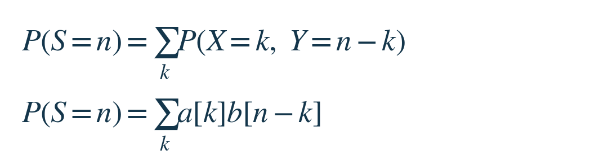
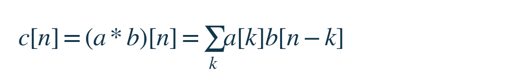
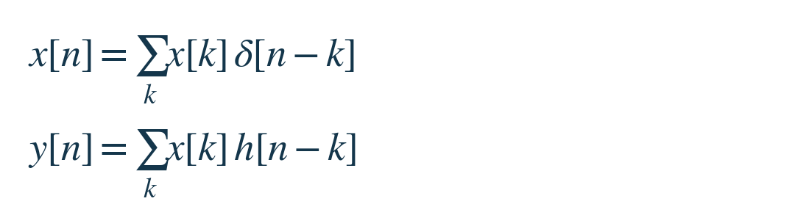
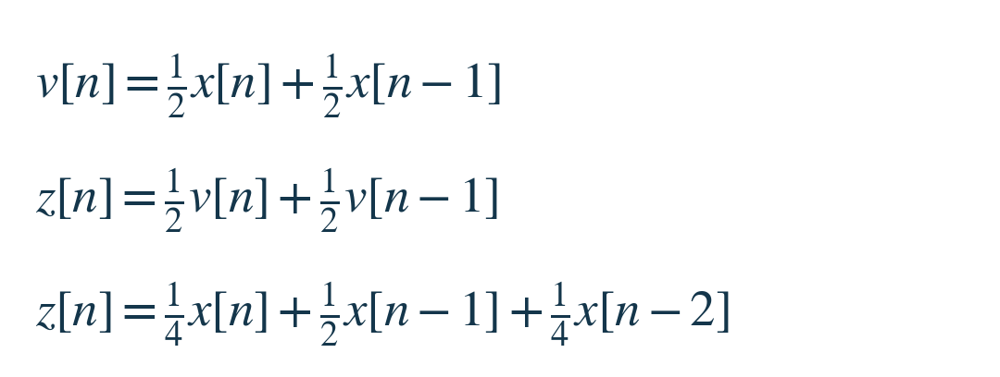

要算一个总结果，可以先固定它，再找出所有能凑成它的两部分，把各条路径的贡献加起来。卷积把这件事写成一种可重复的运算。读完这一课，你应能解释公式里的 n−k 从哪里来，并判断一段计算是否真的满足卷积的条件。
主线约6分钟。我们只用离散的、有限长度的序列，未列出的项都取0，避免先处理积分或无穷求和。这里的任务是计算既定规则下的结果，没有要训练的参数，也没有需要最大化的目标。
两枚硬币，为什么中间的结果更常见？
独立抛两枚公平硬币，正面记1，反面记0。第一枚的结果叫 X，第二枚叫 Y，总正面数叫 S=X+Y。独立表示知道第一枚的结果，不会改变第二枚正反面的概率。
固定总数为1。它有两条互不重叠的路径：第一枚0、第二枚1；第一枚1、第二枚0。每条路径的概率都是1/2×1/2=1/4，所以总数为1的概率是1/2。总数0和2各只有一条路径，概率各为1/4。相乘算一条路径，相加合并不同路径。
把“第一枚取 k 的概率”记作 a[k]，把“第二枚取 j 的概率”记作 b[j]。方括号表示按整数索引查表，不是乘法。现在想计算任意总数 n：一旦第一部分是 k，第二部分就必须是 n−k。遍历所有 k，就不会漏掉或重复任何一对。


第一行只用了事件互不重叠、且覆盖全部可能；第二行才用了独立性。求和符号下的 k 是逐项变化的索引，n 在这次计算中固定。若两枚硬币相关，第一行仍然正确，第二行通常不能成立。[1]
把这套配对规则叫作卷积
暂时拿掉“概率”含义，只留下两个数列 a、b。对每个输出位置 n，枚举索引相加等于 n 的所有配对，乘起来再相加。得到的新数列叫 c；星号 * 在这里表示卷积，不是逐项相乘。


硬币例子中 a、b 都是从索引0开始的两项数列(1/2, 1/2)，卷积结果是(1/4, 1/2, 1/4)。它们恰好非负且总和为1，因此能解释为概率。一般卷积允许负数、也不要求总和为1；那时不能再把每项称作概率。
为什么第二项的索引会“反着走”？因为我们守住同一个总数 n：第一部分 k 增加1，第二部分 n−k 就必须减少1。这比先背“翻转再平移”更直接。这里的不变量是两部分索引之和。
同一个结构，怎样变成信号处理？
现在换对象，不改配对运算。x[n] 表示一串输入在第 n 格的数值，y[n] 表示输出。系统起初没有自己的残留响应。先给第0格一个单位输入，其余为0，测得的输出数列记作 h；h[j] 就是这一次输入经过 j 格后留下多少响应。[2]
要由 h 算出一般输入，还需两条条件。“线性”指输入放大几倍，响应也放大几倍；几份输入相加，响应也相加。“时移不变”指同样的输入晚来 k 格，响应就原样晚来 k 格，形状不变。
于是，第 k 格大小为 x[k] 的输入，在第 n 格贡献 x[k]h[n−k]：n−k 是它已经经过的格数。把每个输入位置的响应加起来，便得到输出。这次相乘是幅度缩放，相加是响应叠加；两条系统条件承担了推导依据，并不需要信号具有随机性。
若想把“逐个输入”也写成公式，定义 δ[0]=1，其他位置δ[n]=0。δ[n−k] 只在第 k 格为1，所以第一行恰好复原整个输入；利用刚才两条条件，逐项换成对应响应，就得到第二行。


共同的结构已经明确：概率里的 k 是第一部分的取值，信号里的 k 是输入发生的位置；n−k 分别是剩余取值与已过时间。概率的乘积来自独立性，响应的乘积来自线性缩放。我们复用的是“索引相加、权重相乘、路径相加”，不是声称两种对象相同。
两次平滑，为什么也出现 1∶2∶1？
一个最简单的平滑器，把当前值和前一格取平均。它的 h[0]=h[1]=1/2，其余为0。第一遍输出记作 v；再用完全相同的规则处理 v，得到 z。下面第二行先保留 v，再把第一行分别用于 v[n] 和 v[n−1]。


前一格的 x[n−1] 出现两次：先延迟0格再延迟1格，或先延迟1格再延迟0格。两条路径各有权重1/4，加起来就是1/2。总延迟0和2各只有一条路径。这正是两枚硬币的四条路径，只是“正面次数”换成了“累计延迟”。
两次平滑的等效权重就是 h 与自身的卷积。因此，独立随机量求和与多级固定滤波，都能用同一套配对算法计算。例子使用零延拓；实际软件若在边界改用较少的点并重新归一化，边界处就不再是这同一个固定卷积。
什么时候需要停下来重建模型？
若硬币相关，要保留联合概率，不能只拿两个边缘概率表卷积。例如两枚总是同面、但各自仍公平，总数1的概率是0，而不是1/2。若系统会饱和，响应不能任意相加；若响应随输入发生的时刻改变，也不能只用一个 h[n−k]。
卷积本身不保证平滑。本课之所以平滑，是因为选了非负的两点平均权重；换成正负权重，可能得到差分等完全不同的作用。先看对象与条件，再认公式，才能迁移这套计算。
一个小练习
仍使用同一个两点平均器，连续做三遍。等效权重应覆盖几格？各格权重是多少？先只追踪累计延迟为1格的路径，不必把所有嵌套式子展开。
先想一想，再看答案
覆盖4格，即延迟0、1、2、3格；权重依次为1/8、3/8、3/8、1/8。每一级选择延迟0或1，各条路径权重都是(1/2)³。总延迟1有三种位置可以放那一次延迟，因此权重为3/8；总延迟2同理。四项相加为1，与平均器保持常数输入的性质一致（在不受零延拓边界影响的内部位置）。